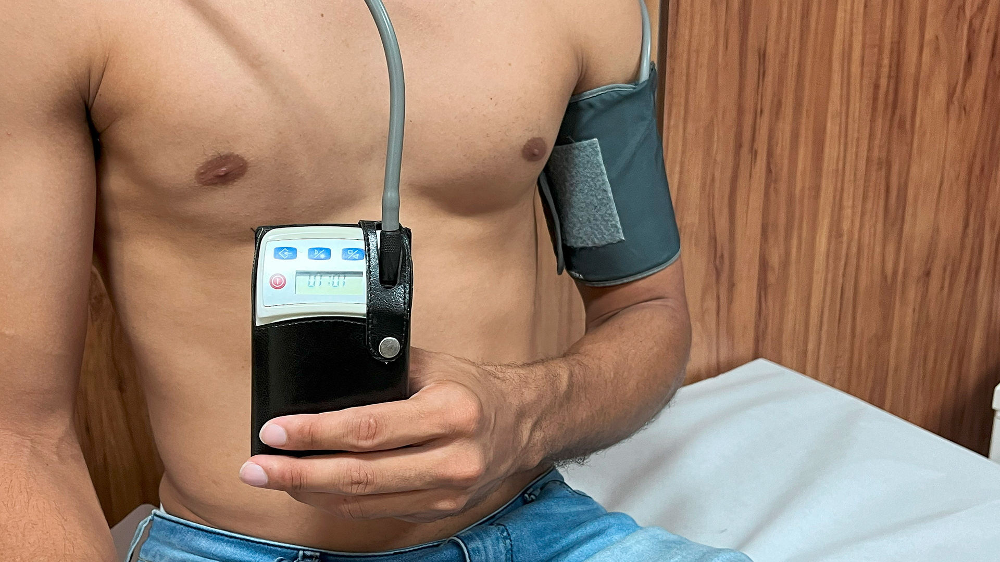

M.A.P.A. 24 horas
O M.A.P.A. 24 horas (Monitorização Ambulatorial da Pressão Arterial) é um exame essencial para monitorar a pressão arterial ao longo de um dia inteiro, permitindo uma avaliação mais precisa dos níveis de pressão em diferentes momentos e situações do cotidiano. O exame é realizado com um dispositivo portátil que registra automaticamente a pressão arterial em intervalos regulares, ajudando a identificar variações que podem não ser detectadas em consultas pontuais.
